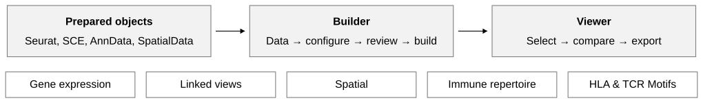
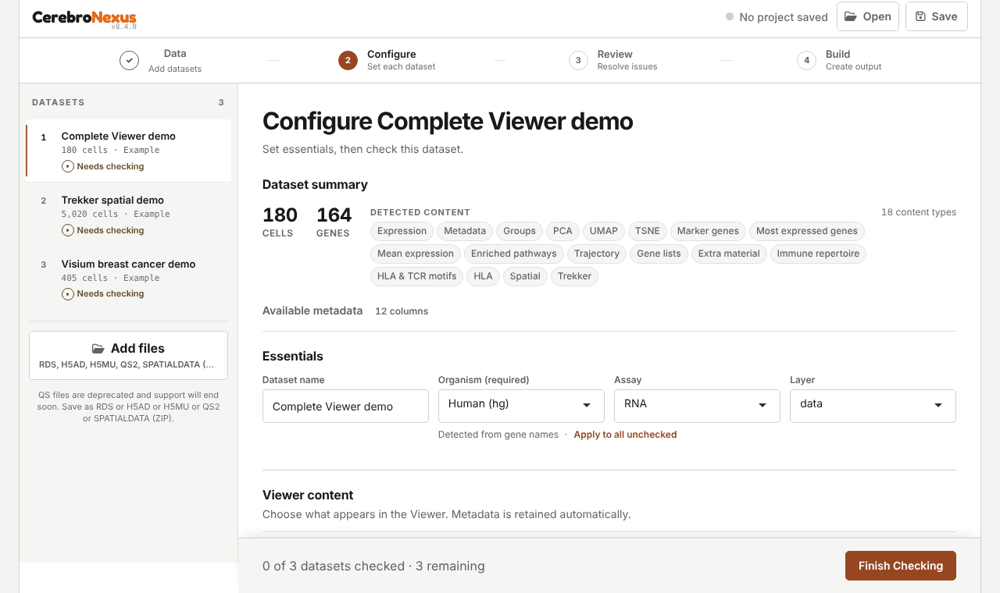
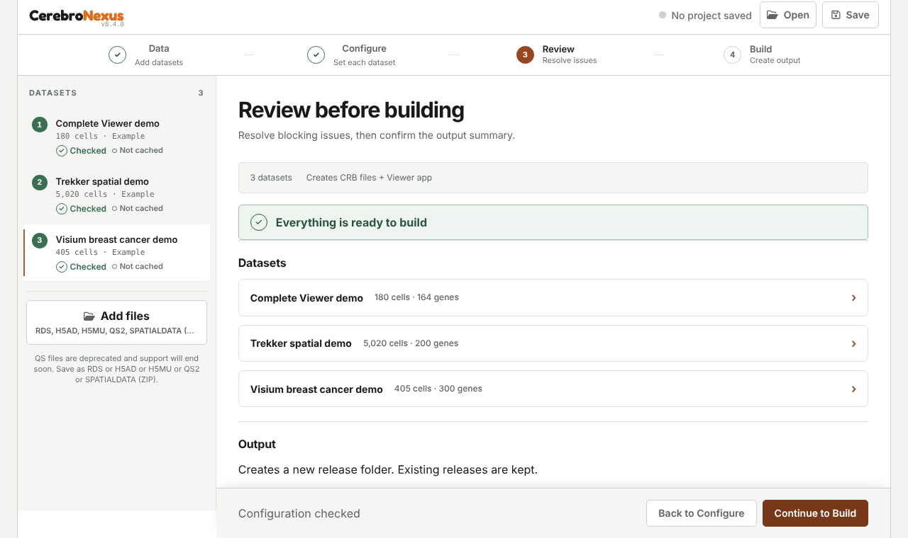
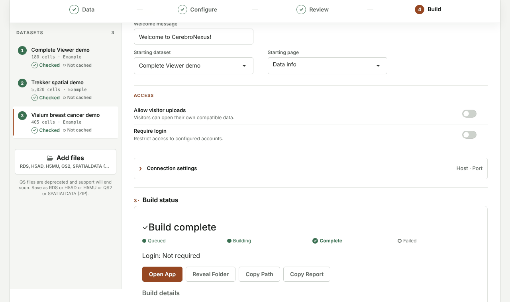

From your analysis to an interactive Viewer
26 November, 2026
Source:vignettes/import_your_analysis.Rmd
import_your_analysis.Rmd
The CerebroNexus workflow and five pages of the Viewer. Gene expression is always there; the other four appear when a data set has the content they need.
CerebroNexus is compatible with Seurat, SingleCellExperiment and AnnData (scanpy) objects, and with SpatialData stores. It shows an analysis that is already done: quality control, normalization, clustering and embeddings stay in the toolkit you already use. For the preprocessing steps, please see:
- Seurat tutorials
- Orchestrating Single-Cell Analysis with Bioconductor for SingleCellExperiment
- scanpy tutorials
Importing turns your object into a .crb file, which the
Viewer opens. The Builder does this by pointing and clicking; in R, the
convert*() functions do the same.
Quick start
Copy these lines into R. They install CerebroNexus and Seurat, turn a
small Seurat object that comes with CerebroNexus (80 blood cells from
10x Genomics) into a .crb file, and open it in the
Viewer:
install.packages("CerebroNexus") # or remotes::install_github("mihem/CerebroNexus")
install.packages("Seurat")
library(CerebroNexus)
seurat_file <- system.file(
"extdata", "examples", "pbmc_seurat.rds",
package = "CerebroNexus"
)
crb_file <- convertSeuratToCerebro(
seurat_file,
result_dir = tempdir(),
experiment_name = "PBMC example",
organism = "Human",
groups = c("seurat_clusters", "sample")
)
launchCerebro(crb_file_to_load = crb_file)launchCerebro() opens the Viewer in your browser. The
address it prints in the R console carries an access token; use that
address to open the Viewer again. Stop the Viewer with the
Stop button of the RStudio console, or Ctrl+C in a
terminal.
A larger example, 1,000 blood cells from 10x Genomics, also comes with CerebroNexus:
launchCerebro(
crb_file_to_load = system.file(
"extdata", "examples", "example.crb",
package = "CerebroNexus"
)
)
The Gene expression page of the larger example: MS4A1, a B cell marker, on the UMAP, and further down the same page its expression in each cell type. The sidebar lists the pages this data set has.
With the Builder
The Builder opens in your browser. It needs a few suggested packages, such as Seurat; see the installation instructions.
-
Data: add your files, or click Load example
datasets to try the Builder with three examples. It reads
Seurat and SingleCellExperiment objects saved as
.rdsor.qs2, AnnData.h5adand MuData.h5mufiles, and a.zipof a SpatialData.zarrfolder. - Configure: check the name, organism, assay and layer of each data set, choose what the Viewer shows, then click Finish Checking.

- Review: confirm what will be built.

- Build: choose a Viewer app or CRB files only, set what visitors see first, click Build and choose a folder. When the build is complete, Open App starts the result.

The Builder can also add most expressed genes, marker genes and other tables, and offers PAGA, scVelo and pseudotime trajectories next to monocle2. See Build a data set without writing code for all options.
With R
Four kinds of input lead to a .crb file:
| You have | Convert with |
|---|---|
Seurat object (.rds, .qs2) |
convertSeuratToCerebro() |
SingleCellExperiment (.rds, .qs2) |
convertSCEToCerebro() |
AnnData / scanpy file (.h5ad), MuData
(.h5mu) |
convertH5adToCerebro() |
SpatialData store (.zarr folder, or a .zip
of one) |
convertSpatialDataToCerebro() |
Each function writes the .crb file into
result_dir and returns its path. The examples below use
files that come with CerebroNexus, so they run as they are. With your
own data, use your file and the meta data columns you want as
groups. The routes other than Seurat need a few optional
packages, such as SingleCellExperiment; a function that misses one says
which and how to install it (see Optional
packages).
From a Seurat object
The quick start is this route. For your
own object, replace seurat_file by the path of your
.rds or .qs2 file, or by the Seurat object
itself, and groups by your own meta data columns.
To add tables of marker genes and enriched pathways before the export, see Prepare and export a Seurat object in R.
From a SingleCellExperiment
sce_file <- system.file(
"extdata", "examples", "pbmc_SCE.rds",
package = "CerebroNexus"
)
convertSCEToCerebro(
sce_file,
result_dir = tempdir(),
assay = "logcounts",
organism = "Human",
groups = c("cluster", "sample")
)From an AnnData file
CerebroNexus comes without an .h5ad file, so this
example first writes one from the .crb file of the quick
start (see Back to scanpy):
h5ad_file <- file.path(tempdir(), "pbmc.h5ad")
exportToH5ad(crb_file, h5ad_file)
convertH5adToCerebro(
h5ad_file,
result_dir = tempdir(),
organism = "Human",
groups = c("seurat_clusters", "sample")
)AnnData files are read natively with rhdf5; no Python is
needed. This takes what scanpy stored, not only the matrix:
- the embeddings in
obsm(X_umap,X_pca, …) as projections; - the ranked marker genes from
sc.tl.rank_genes_groups; - scanpy’s category colours
(
uns["<column>_colors"]); - Visium coordinates and tissue images (
obsm["spatial"],uns["spatial"]), one spatial section per library; - scirpy TCR/BCR tables (
airrargument) and PAGA / scVelo / pseudotime trajectories.
Use use_raw = TRUE for adata.raw,
modality = to pick one modality of an .h5mu
file, and gene_names = to name genes by a var
column when the index holds Ensembl IDs.
From a SpatialData store
The example is a tiny synthetic store of 50 cells:
spatialdata_file <- system.file(
"extdata", "examples", "small_spatialdata.zip",
package = "CerebroNexus"
)
convertSpatialDataToCerebro(
spatialdata_file,
result_dir = tempdir(),
groups = "cell_type"
)The cell table, the coordinates and the tissue pictures are read from
the store, with one spatial section per region. Coordinates come from
obsm["spatial"] when the table has them (Visium) and from
the shapes the table annotates otherwise (MERFISH, Xenium). If a large
store reads slowly, see Troubleshooting.
Back to scanpy
Because .crb is the hub, the formats also convert into
each other: a Seurat object can be written as .h5ad for
scanpy, an .h5ad file can be turned into a
SingleCellExperiment, and so on.
exportToH5ad(crb_file, "pbmc_back.h5ad")Expression, cell metadata, projections, marker genes, category
colours and, for spatial data, coordinates and tissue images are
written. A message lists what .h5ad has no place for
(immune repertoire, trajectories, trees, …).
Next steps
- Open a
.crbfile withlaunchCerebro(crb_file_to_load = ...), or the app the Builder made with Open App. - To add CerebroNexus analyses to a Seurat object first (marker genes,
enriched pathways, gene set enrichment), and to export it with
exportFromSeurat(), which lets you choose the file name, see Prepare and export a Seurat object in R.exportFromSCE()does the same for a SingleCellExperiment. - To share the result, see Share data sets as a Shiny app.
Troubleshooting
A SpatialData store reads slowly or stops with a codec name
Stores compressed with Blosc (lz4, zstd or zlib), zstd or gzip are
read; a store that needs another codec stops with the codec’s name.
Blosc chunks are decoded in R, lz4 (the numcodecs default) at about 4
MB/s, so re-save a large store with zstd, or use an .h5ad
file.